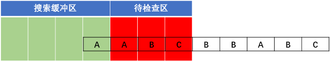

一种高性能的消息传递机制
目录
消息协议与传输【msg_id篇】
消息流程图解
消息定义与数据类型
消息定义
消息定义+消息结构定义，能让底层传输的数据仅仅只有数据，而没有数据类型、名字、分类。两边通过消息id来区分该消息的结构，一边压缩，一边解析。极大的减少了传输的数据量。
const常量表
定义一些在之后的消息定义中会使用到的常量。比如GS的最大数量、密码的长度、角色名的长度。
角色事件
定义玩家的一些操作事件，这里的操作包括了在服务器中流转的消息和在客户端内玩家操作需要服务器进一步处理的消息。
角色使用物品事件
确认取消框
服务器通过传送这类消息来让客户端显示某种类型的按钮显示框，客户端接收到这类消息后会自动将用户的选择结果返回给服务器。
服务器与服务器之间的公共消息
这类的消息是最多的，一般会用是哪两种服务器之间的通信进行定义消息分类名。
通用消息
一些事件可能是临时加的、或者是非常特殊的消息，或者是所有服务器都能使用的公用消息。这类的消息分类不明显，可以放到通用消息结构内。但是这类消息应注意不要和其他类型的消息值冲突在判定消息时可能会引起错误。
各类消息结构定义
消息结构定义了某种消息的传递结构，比如“id=i,count=i”。其中等号左侧为类型名，用于将消息进行压缩和解压时候的分类，右侧为值的类型。比如(u)short、(u)int、(u)char、string以\0结尾
lua到c++传输数据转换
| lua层适用 | c++层对应 | 类型定义 |
|---|---|---|
| i | int | |
| I(upper i) | unsigned int, DWORD | |
| w | short | |
| W | unsigned short, WORD | |
| b | char | |
| B | unsigned char, BYTE | |
| f | float | |
| d | double | |
| s | *char | 不定长字符串，单个消息内只能出现一次，且必须放在末尾 |
| l(lower L) | boll | |
| N | 字节流数据，在手机端使用 | |
| S(upper s) | *char with \0 | 字符串数据，末尾带有\0, 定长 |
| M | 特殊类型， 转发消息时，使用前一个消息id的定义 | |
| $ |
复合类型 | 比如table |
| 数组类型 | 该type类型的消息重复长度len次 |
消息的转换过程
消息注册
lua层定义的消息有一个格式，列表中{msgid, base, defstring} 对应了某个msgid应该对应的解析字符串是什么。当然每个进程的c++会将对应的服务器之间的消息保存到对相应的数据内存中。python伪代码如下
1 | # c++存储对应表的变量 vector<vector<pair<string, FieldValue*>>> |
消息转换
每一个lua消息需要发送的时候，msgid是关键，每个msgid对应的数据串的结构。假设有个服务器需要发送某个msgid值的msg_table到另一个服务器。
消息判断。首先判断一下当前的msgid是否存在。
获取用msgid来解析msg_table，将其转换为单纯的c++数据字符串，用递归重复的判断数据。python伪代码如下：
1
2
3
4
5
6
7
8
9
10
11def get_msg_buffer(msgid: int, index: int, retbuffer) -> int:
retlen = 0
for name, c in typedef[msgid]:
if c == 'i':
lua_get_field(L, index, name) # 通过名字获取table中的一个字段值
retbuffer += lua_toint(L,1) # 加到返回buffer中（c++中是分开为两次做）
retlen += len(int) # 更新长度
elif c == '$':
retlen += get_msg_buffer(msgid, get_new_index(index), retbuffer)
# ...
return retlen
通过这样一层一层每一种数据，读取固定的数据，将其转化为固定长度。整个消息结构遍历完毕后，就能得到整个retbuffer字符串，这个字符串中存的全部是数据，没有多余的名字等字段。
在上一步完成后，现在有的数据就是需要传输的数据的msg实体与这个msg的长度
然后，在写到输出缓冲区时，还需要包装上msgid和连接id，一条完整的消息结构如下：
| 连接id(最外层) | 消息长度 | 消息id | 消息字符串(最内层) |
| ————– | ——– | —— | —————— |
| conn_id | msg_len | msg_id | msg |然后就可以发送了。但是不同的地方是这里的数据没有压缩，也没有加密。那么如果有很长的数据，会进行压缩。而有的数据也需要进行加密。以下我们继续介绍这两部分。
消息压缩
数据过长也就是字符串过长，压缩的方法有很多种，压缩的效率和压缩的效果成反比，常用的有 LZ77 和 LZ4 压缩算法。现在的服务器使用的是LZ4算法中的快速版本。总而言之，这两个算法就是是字典查重复字符串，在用滑动窗口的情况下，记录位置长度。
LZ77 压缩算法是当今最常用的无损压缩算法，是基于字典的带滑动窗口的。
- LZ77 压缩算法的原理 微软LZ77文档
假设有一串字符串AABCBBABC，当前这个字符串的长度为9。假设我们读到了第二个字符A，此时程序会记录 (1,1) 代表了距离上一个字符串距离为1，字符的长度为1。而如果读到了第二个B，那么值就会是(2,1) 。
这样做的话有个问题，对于刚刚的列子来说，串中只有3个字符，存的字典中可能就只有3个。而如果字符数很多，匹配的字符串长度不一定为1的话，这个字典就会非常大。那么匹配一个字符串是否是字典中出现的时候复杂的会异常的高。
LZ77引入了搜索缓冲区和待检查区。搜索缓冲区代表的是字典字符串，负责的是被检查串的匹配对象。待检查缓冲区代表的是检查窗口，这个窗口当然是滑动的。这也保证了每次LZ77匹配的时候不会匹配过多的字符串导致复杂度急剧上升。
LZ77 压缩算法模拟
假设还是刚刚举例子的字符串“AABCBBABC”，现在我们来对其进行编码。
一开始，窗口滑入如图位置:
由图可见，待编码缓冲区有“AAB”三个字符，此时搜索缓冲区还是空的。所以在编码第一个字符时，由于搜索区为空，因此找不到匹配串，输出(0,0, A),。
窗口右移一个单位，如下图

此时待编码区有“ABC”。开始编码。最先编码”A”，在搜索区找到”A”。由于没有超过待编码区，故开始编码”AB”，但在搜索区没有找到匹配字符串，故无法编码。因此只能编码”A”。
输出(1, 1)。即为相对于待编码区，偏移一个单位，匹配长度为1。窗口右滑动匹配长度，即移动1个单位。如下图
一样，没找到，输出(0, 0, B),右移1个单号，如下图
输出（0， 0， C）,右移1个单位，如下图
输出(2, 1),右移1个单位，如下图
输出(3, 1)， 右移1个单位，如下图
开始编码”A”，在搜索缓冲区查找到匹配字符串。由于待编码缓冲区没有超过，继续编码。开始编码”AB”,也搜索到。不要停止，继续编码“ABC”，找到匹配字符串。由于继续编码，则超过了窗口，故只编码“ABC”，输出(5, 3),偏移5，长度3。右移3个单位，如下图
此时待编码缓冲区为空，停止编码。
字符串的匹配算法 - KMP
kmp算法是字符串算法的入门算法。它能在O(n+m)时间里获得一个P模式串在S原串中出现的位置。这里大概讲一下它的原理。
假设有字符串BBCABCDABCDABD, 匹配串为ABCDABD。那么一开始匹配会是如下图
如果是旧方法，那么一定会有对于每一个S串的字符，P串都一个一个的区匹配，这样的复杂度是O(n*m)的。我们从例子中引出算法。假设匹配到了如下的情况，如下图：
此时P串的前面ABCDAB都匹配成功了，但是最后一个D匹配失败了，如果是老方法，那么整个字符串就只会向后移动一位，从P串的头开始重新匹配。
但是，如果我们能做到让他每次移动的距离不是1，而是更多，那么就能降低非常多的复杂度。
观察一下模式串P，其中的AB与后面的AB是相等的那么我们移动的位置同样可以是这样的：比较一下上面的两个图，由第一个图一直移动需要有AB存在的时候才能继续匹配，这样的情况只能在第二个图里出现，而这个AB在模式串P里是已经能判断了的，并且可以重复利用。那我们就能先处理好模式串P中的自匹配，在利用这个数组，来辅助匹配字符串S。
Next数组求的方式就是字符串的前缀和后缀的匹配，这里不详细讲了。可以继续在网上了解一下
字符串匹配算法里我们常用的还有字典树，AC自动机，后缀自动机… 等等。
LZ4是基于LZ77的基础上修改了一些实现方法和存储表使用空间，简化了，但是变得非常的快。
LZ4 压缩算法原理
LZ77算法中使用的是搜索缓冲区，实际上并没有额外开其他的空间，这个搜索缓冲区来源于源字符串的位置，被当做了字典使用。
而LZ4算法中的字典是用的hash表进行查询，现在的快速版本是：每4个字节进行hash表查询，每种hash值只对应一个槽。这个hash字典中key对应的是一个4字节的字符串，而value则对应的这个字符串的位置。
LZ4 压缩算法图解
一开始字典中是空的，我们假设现在的待检查区，也就是滑动区块的大小是6。xxhash这段的结果，由于是4字节4字节进行哈希，xxhash会得到一个key值，lz4会在字典中设置这个值的value为当前的字符串的位置：
假设CABD的hash值为1234，那么表中就会记录下当前的这个位置。
下一步会继续读取4个字节，同样是CABD，hash值同样是1234，此时会更新位置5，由于两个的值对应上了。此时会输出这次匹配和上次匹配之间的字符串，再输出值5，比如CABD5
消息加密
Client到BCS的数据有些数据类型是需要加密传输的，比如最简单的例子：密码。但是密码加密可以用不可逆算法MD5处理，而有的数据类型需要通过解密得到其中的数据。
密钥和公钥
消息传输
io模型
unix下有以下5中io模型。
[1] blocking IO - 阻塞IO
[2] nonblocking IO - 非阻塞IO
[3] IO multiplexing - IO多路复用
[4] signal driven IO - 信号驱动IO
[5] asynchronous IO - 异步IO
“真正”的异步IO需要操作系统更强的支持。在IO多路复用模型中，事件循环将文件句柄的状态事件通知给用户线程，由用户线程自行读取数据、处理数据。而在异步IO模型中，当用户线程收到通知时，数据已经被内核读取完毕，并放在了用户线程指定的缓冲区内，内核在IO完成后通知用户线程直接使用即可。

相比于IO多路复用模型，异步IO并不十分常用，不少高性能并发服务程序使用IO多路复用模型+多线程任务处理的架构基本可以满足需求。况且目前操作系统对异步IO的支持并非特别完善，更多的是采用IO多路复用模型模拟异步IO的方式（IO事件触发时不直接通知用户线程，而是将数据读写完毕后放到用户指定的缓冲区中）。Java7之后已经支持了异步IO，感兴趣的读者可以尝试使用。
其中前面4种IO都可以归类为同步IO，而select、poll、epoll本质上也都是同步I/O，因为他们都需要在读写事件就绪后自己负责进行读写，也就是说这个读写过程是阻塞的。
epoll与IOCP
epoll和IOCP都是作为IO复用的代表，在单线程下能进行多个IO的同时监听，相较于select/poll来说，他们复杂度更加优秀。epoll是linux独有的，而IOCP则是用在windows下的。这里我介绍以下epoll。
epoll原理
说起epoll就需要简单说一下io问题。我们在socket读取数据的时候，socket.accept()函数会一直阻塞，直到有新的数据到来，底层cpu会同时用户可以进行接收数据了。很明显，如果让进程一直等在这里阻塞，就浪费了大量的事件，况且有的服务器会连接多个服务器，那处理完一遍所有服务器的请求，时间就是服务器个数*处理时间 + 阻塞时间。这里我们假设的是在处理一个数据的时候，其他数据都到来了。
select解决的是在同一时间监听多个io，并且能自己设置等待时间。这样我们现在的逻辑就能变成：如果等待一定的时间后都没有数据到来，就跳出来处理其他的东西，而此时，select实际上仍然是在监听是否有数据到来。如果有数据到来，select会将这个socket，或者说是文件描述符标记为可读状态，当然一个io可读同时也可写。
但是select有缺点
第一点是他监听的io数量有上限，这个上限是1024。poll解决了这个问题。
第二点poll没能解决，每次用户态需要将内核态的数据复制过来，一个一个检查当前这个io是否可以读或者写。这大大降低了select在监听大量io时候的效率。以下是select/poll/epoll在监听io数量上的性能变化：
epoll的快速
第一点是epoll在被内核初始化时，同时会开辟出epoll自己的内核高速cache区，用于安置每一个我们想监控的socket，这些socket会以红黑树的形式保存在内核cache里，以支持快速的查找、插入、删除。
第二点是我们在调用epoll_create时，内核除了帮我们在epoll文件系统里建了个file结点，在内核cache里建了个红黑树用于存储以后epoll_ctl传来的socket外，还会再建立一个list链表，用于存储准备就绪的事件，当epoll_wait调用时，仅仅观察这个list链表里有没有数据即可。有数据就返回，没有数据就sleep，等到timeout时间到后即使链表没数据也返回。
list链表
list链表中的数据是通过内核的中断来写入的。当我们执行epoll_ctl时，除了把socket放到epoll文件系统里file对象对应的红黑树上之外，还会给内核中断处理程序注册一个回调函数，告诉内核，如果这个句柄的中断到了，就把它放到准备就绪list链表里。所以，当一个socket上有数据到了，内核在把网卡上的数据copy到内核中后就来把socket插入到准备就绪链表里了。
红黑树
红黑树是一棵平衡树，但相较于AVL平衡树的完全平衡来说，红黑树的左右两端的平衡差并不一定是一。
总结一下，epoll的高效是建立在一棵红黑树、一个句柄链表、以及少量内核cache上的。
服务器的监听架构

创建监听
在底层，每一个进程都会创建一个epoll监听，再创建一个线程，让线程阻塞地运行epoll进行io的读取。
Create()创建一个新的epoll。基本socket创建初始化。
epoll创建初始化。
端口重用，让TIME_WAIT的时间设置为立刻重用。
linger字段设置，让socket套接字在关闭时等待套接字内的数据发送完毕再关闭。
so_linger字段
iOptValue.l_onoffiOptValue.l_lingersetsockopt(mysock, SOL_SOCKET, SO_LINGER, (char*)&iOptValue, iOptLen)设置 l_onoff为0，则该选项关闭，l_linger的值被忽略，等于内核缺省情况，close调用会立即返回给调用者，如果可能将会传输任何未发送的数据；
设置 l_onoff为非0，l_linger为0，则套接口关闭时TCP夭折连接，TCP将丢弃保留在套接口发送缓冲区中的任何数据并发送一个RST给对方，而不是通常的四分组终止序列，这避免了TIME_WAIT状态；
设置 l_onoff 为非0，l_linger为非0，当套接口关闭时内核将拖延一段时间（由l_linger决定）。如果套接口缓冲区中仍残留数据，进程将处于睡眠状态，直 到（a）所有数据发送完且被对方确认，之后进行正常的终止序列（描述字访问计数为0）或（b）延迟时间到。此种情况下，应用程序检查close的返回值是非常重要的，如果在数据发送完并被确认前时间到，close将返回EWOULDBLOCK错误且套接口发送缓冲区中的任何数据都丢失。close的成功返回仅告诉我们发送的数据（和FIN）已由对方TCP确认，它并不能告诉我们对方应用进程是否已读了数据。如果套接口设为非阻塞的，它将不等待close完成。
不使用Nagle算法，不会将小包拼接成大包，直接将小包发送出去。
线程运行
- 创建线程来开始epoll的阻塞等操作，linux下线程创建后会立即运行。线程调用的函数中
- 有epoll_wate的调用，每次获取信息判断为：
- 新监听类型：初始化新的sockaddr_in等，进行accept。创建一个新的pConn客户端类，add到服务器的pEpoll监听队列中。
- 读类型：调用读函数，写入缓冲区。
- 实现了一个缓冲区类，进行对数据的存储。在其上进行读写操作。
- 读之前会声明一个char*，并同时初始化可以存储的缓冲区大小。判断有空间存储，再开始读取。
- 指针的位置来自于缓冲区类得到的空闲空间的首地址。
- 如果读取的大小大于零。需要更新缓冲区类的属性。
- 如果小于等于零。需要判断是否有错误信息。
- 实现了一个缓冲区类，进行对数据的存储。在其上进行读写操作。
- 写类型：调用写函数，从缓冲区中读数据发送出去，和读类中缓冲区操作类似。
- 错误类型：错误打印。退出客户端
Release()判断是否已经退出。等待线程退出，关闭各种套接字、epoll。
读写流
服务器实体和EPOLL层都能作为读者和写者，缓冲区分类为读入、写出两种。m_RBuffer负责接收的数据，m_SRbuffer负责写的数据
相当于每个服务器一般对应两类线程，一类专门处理epoll阻塞的io请求， 另一类只有一个，专注处理逻辑处理与分发
读写指针图解
一般情况下，程序运行的时候，在buffer中有读和写两种指针，以下是读缓冲区（也就是从外部程序到本程序的数据）：
在有新的数据来的时候，epoll会在写指针的后面写东西，但此时并不会动写指针，只有当写的数据写完毕了才原子性地修改写指针的位置。这样能保证读指针读取的数据一定是写好了的。
epoll读取数据的时候，会让buffer申请一个数据块进行写，如果这个数据块正在被读，那么就会重新申请一个。
此时的写端为epoll线程，读端为逻辑处理区，要注意的是不同的服务器连接用的是不同的epoll连接对象，每个对象都会有自己的buffer区，这样保证了不同的buffer区存储的一定都是固定的两个服务器的某个方向的数据。
以下是写缓冲区（也就是从本程序到外部程序的数据）：
最开始，写出数据中有两个队列。一个buffer队列。其中写的有要发送出去的数据，另一个为请求队列，放的是要发送的客户实例指针。在发送数据的时候，就会在两个队列中取出数据，将buffer中的数据使用对应的客户端实例的epoll来发送这个数据。